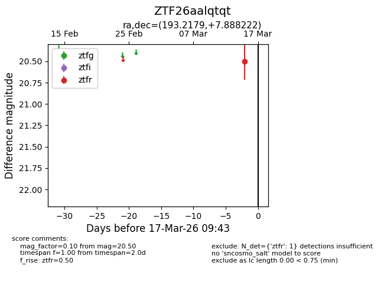
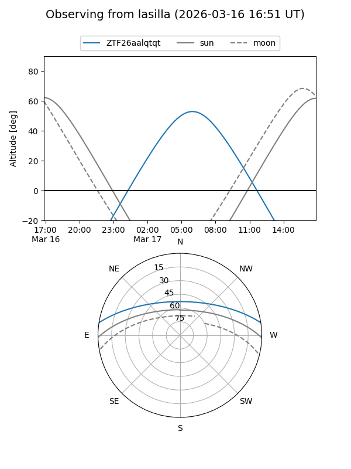
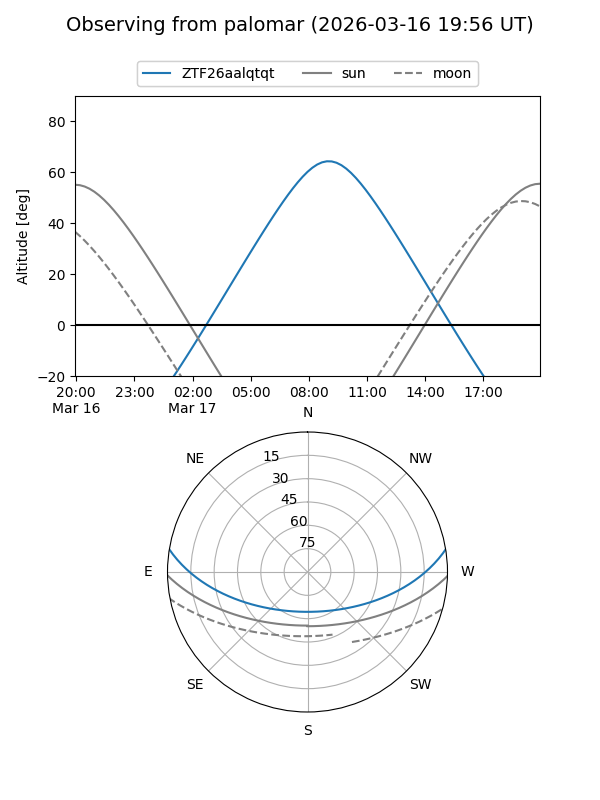

ZTF26aalqtqt
Target ZTF26aalqtqt at 2026-03-17 09:45
Aliases and brokers:
FINK: link
Lasair: link
ALeRCE: link
alt names
ZTF26aalqtqt (ztf,fink_ztf)
Coordinates:
equatorial (ra, dec) = 193.2179,+7.88822
equatorial (HMS+DMS) = 12:52:52.29,+07:53:17.60
galactic (l, b) = (304.0092,+70.75697)
Flags:
Photometry:
last ztfr=20.50
1 ztfr detections
Lightcurve

Visibility


Additional plots